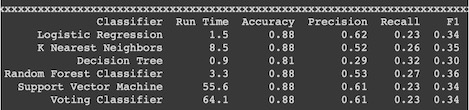
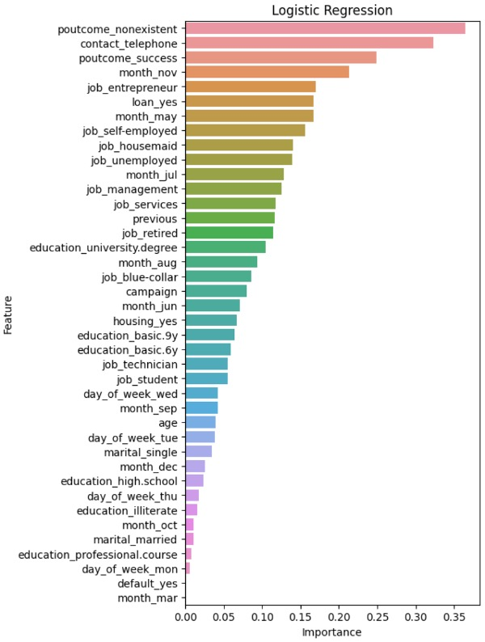

Customer Classification
for Bank Marketing Campaign
Improvement of acceptance rate from 1 in 10 to a predicted acceptance rate of 1 in 3 by using machine learning to classify cusomers who are likely to accept a bank product offer. Link to My Code: Colab Notebook
Background
A Portuguese bank has run direct marketing campaigns to offer customers a term deposit product. They have contacted customers via 1 or more phone call and have seen some success. By reviewing if they can more accurately predict which customers may accept their offer, they can be more efficient when repeating this campaign. This project was completed to review various classification machine learning models in order to compare and contrast the different models.
Data Source: UC Irvine Machine Learning Repository
Models Implemented
| Model | Mode of Action |
|---|---|
| Logistic Regression | Mathematically powered model that classifies based on how the data fits an S shaped line. Training creates the S shaped regression equation where new data can be scored with. |
| Decision Tree Classifier | Model that classifies by splitting the data based on if-else questions creating a hierarchy of nodes. The split is determined by maximizing the information gain. These decisions create decision regions that can be used to score new data. |
| Random Forest Classifier | Using a decision tree as its base estimator, this model will introduce more randomization by repeating training multiple times using a different bootstrap training set. |
| K Nearest Neighbors | Data driven model that classifies based on the nearest records determined by their Euclidean distance. New data can be compared to the nearest records to be scored. |
| Support Vector Machine | A model that classifies based on a linear line. This method creates a margin that attempts to separate the data into two classes. |
| Voting Classifier | This model is an ensemble learning model that runs different models and makes the final prediction based on what the previous models “voted” |
Models Evaluation Criteria
We will evaluate the models using their confusion matrix. We are especially interested in models that have a high precision. This will help us deploy a model that can select the most likely candidates for a bank offer from a larger dataset and lead to a better return on investment.
Being predicted to be a viable sale will result in a sales call. In this case, recall is not as important because it is more important that we maximize the amount of true positives.
Analysis & Results
Steps taken
- Import dataset & review documentation
- Initial analysis & exploration
- Data preparation for machine learning
- Classification models
- Modify data to account for unbalanced classes
- Review Results
Model Results
Feature Importance
The models had differing feature importance breakdowns. Additional feature selection can be completed by removing features that are not significant for the model. This may also improve the model efficiencies
Conclusions
The best performing model was the Logistic Regressor with an accuracy of 88%. Some of the other models were observed to be overfitting, such as the tree classifiers. This is one of the optimizations may be possible. Sampling methods had a negative effect on the performance of the classifiers with this dataset. It is critical to conduct thorough exploration and review of documentation to ensure effectiveness at deployment
Recommendations
Logistic regression resulted in almost 1 in 3 records accurately predicted whether a customer accepted the offer (30% precision). This has improved the original campaign that had a 9% acceptance rate. This model can be used to improve campaign performance in the future. Asking for contact preferences & customizing the method of marketing to those preferences may promote future success. Aligning campaigns to seasonal trends can also help the bank have better conversion rates. For example, this campaign historically performed better in Dec, Mar, Oct, and Sept.